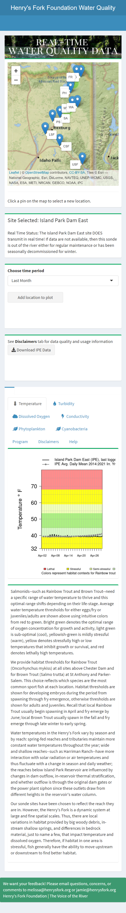

Contrast
Henrys Fork Foundation
henrysforkdata...io I tried to use sites I actually browsed on my phone this week. As such, they are not world class examples like apple.com would be. This site is a humble example of effective use of contrast. Notice that the words are all easy to read on their backgrounds. Another point exemplified here is that the contrast should not distract from the site content. It was easy to find the information I was looking for on this site.
Alignment
You will notice this site is heavily aligned left. It is not the most aesthetically pleasing page, but is a good example of alignment. The reading mentioned that left alignment was ideal for reading text. It was very easy to read the content on this page.
Repitition

This Etsy search page is a good example of repetition. Notice that each posting shares the same elements, organization, and sizing. While scrolling through the results the products are showcased. The repeated elements minimize distraction from the content of each posting.